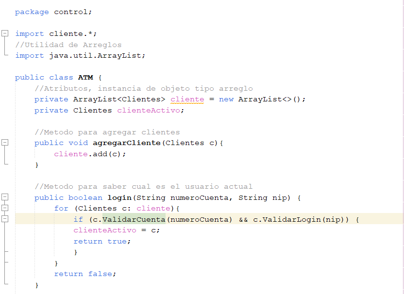
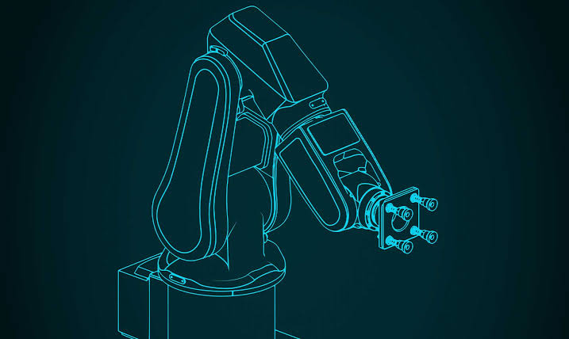

Galería Visual del Proyecto
Muestra gráfica de tecnologías integradas localmente en el directorio de recursos del portal:




Muestra gráfica de tecnologías integradas localmente en el directorio de recursos del portal:

